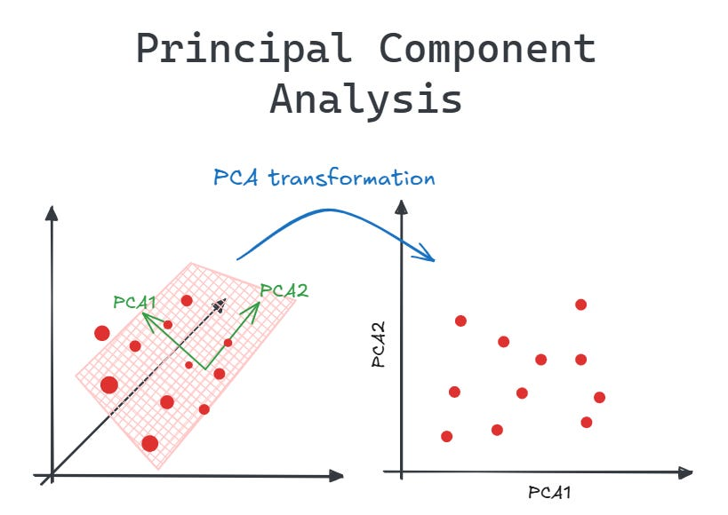
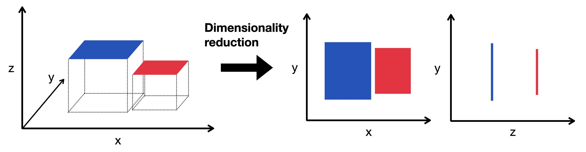
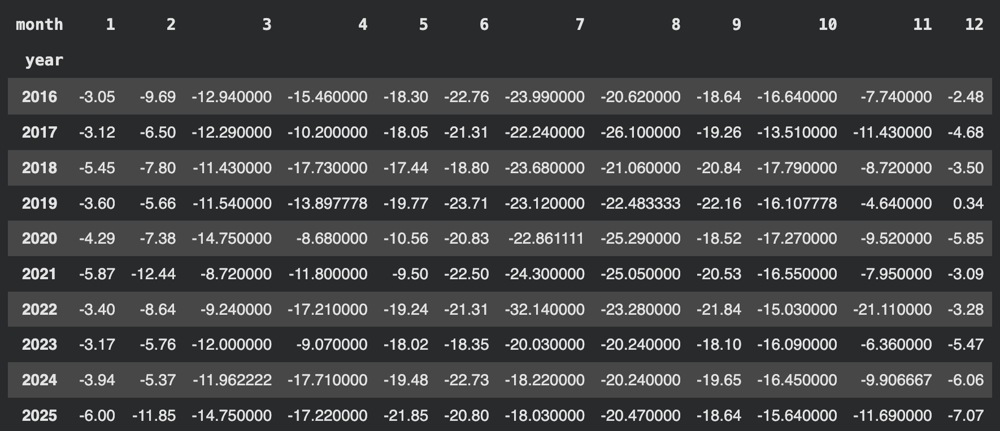
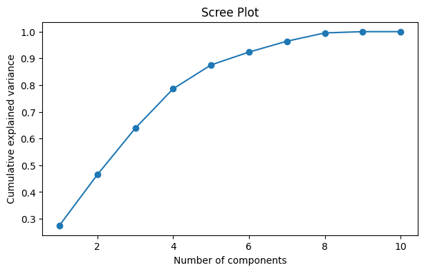
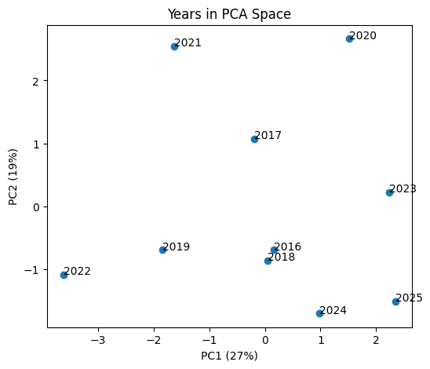

Overview
1. What Is Principal Component Analysis?
Principal Component Analysis (PCA) is an unsupervised dimensionality reduction technique. It re-expresses a dataset with many correlated numeric features as a smaller set of new, uncorrelated features called principal components. Each component is a weighted combination of the original features, and the components are ordered so that the first captures as much of the data's variance as possible, the second captures as much of the remaining variance as possible while being orthogonal to the first, and so on. Keeping only the first few components compresses the data while preserving most of its structure.

2. What Is Dimensionality Reduction?

Every feature in a dataset is a dimension. A table with 50 numeric columns describes each observation as a point in 50-dimensional space. Dimensionality reduction is the process of transforming such data into a smaller number of dimensions while keeping as much of the meaningful information as possible. There are two broad approaches:
- Feature selection: keep a subset of the original features and discard the rest.
- Feature extraction: build new, fewer features from combinations of the original ones. PCA is a feature extraction method, and it is linear, meaning each new feature is a weighted sum of the originals.
Reducing dimensionality matters for several reasons:
- Simpler analysis: fewer variables are easier to describe, model, and explain, and models fit on fewer inputs are less prone to overfitting.
- Visualization: people can only look at two or three dimensions at once. Projecting the data onto two or three components makes it possible to plot every observation and see groups, trends, and outliers.
- Removing redundancy and noise: correlated features repeat the same information. Combining them into one component consolidates the signal, and the low-variance components that are dropped often contain mostly noise.
- Efficiency: less data to store and faster computation for downstream methods such as clustering and regression.
3. Challenges of High-Dimensional Data
As the number of features grows, data becomes harder to work with. These problems are often grouped under the term curse of dimensionality:
- Sparsity: the volume of the space grows exponentially with each added dimension, so a fixed number of observations spreads out thinly. Observations end up far from each other, and reliable patterns require far more data.
- Distances lose meaning: in very high dimensions the gap between the nearest and farthest neighbor shrinks. Methods that depend on distance, including k-means, hierarchical clustering, and k-nearest neighbors, become less effective.
- Overfitting: when features are numerous relative to observations, a model can fit noise instead of real structure and then perform poorly on new data.
- Multicollinearity: many features are correlated with one another, which makes model coefficients unstable and difficult to interpret.
- Computational cost: storage and run time grow with the number of features.
- Hard to visualize and interpret: there is no direct way to plot more than three dimensions, so structure stays hidden.
Dimensionality reduction addresses these problems directly. By compressing many correlated features into a few components, PCA densifies the data, restores more meaningful distances, removes collinearity (components are uncorrelated by construction), lowers the risk of overfitting, cuts computation, and allows the data to be plotted in two or three dimensions.
4. Eigenvalues and Eigenvectors
Eigenvalues and eigenvectors are the mathematical core of PCA. A matrix can be thought of as a transformation that stretches, rotates, or shears space. For most vectors, applying the matrix changes both their length and their direction. An eigenvector of a square matrix A is a special non-zero vector whose direction is unchanged by the transformation; it is only scaled. The factor by which it is scaled is its eigenvalue:
A v = λ v
where v is the eigenvector and λ is the eigenvalue. Eigenvectors point along the axes of the transformation, and eigenvalues say how strongly it acts along each axis.
In PCA the matrix is the covariance matrix of the standardized features, which is square and symmetric. This gives its eigenvectors and eigenvalues useful properties:
- Eigenvectors are principal component directions: each eigenvector is a set of weights (loadings) over the original features, defining one principal component axis.
- Eigenvectors are orthogonal: because the covariance matrix is symmetric, its eigenvectors are perpendicular to one another, so the components are uncorrelated.
- Eigenvalues are variances: each eigenvalue equals the variance of the data along its eigenvector. The largest eigenvalue belongs to PC1, the direction of greatest spread, the next to PC2, and so on.
- Explained variance ratio: dividing an eigenvalue by the sum of all eigenvalues gives the proportion of total variance explained by that component. For p standardized features, the eigenvalues sum to p.
This is why eigenvalues drive dimensionality reduction. Components with large eigenvalues carry most of the information and are kept, while components with small eigenvalues add little and can be dropped.
Data Preparation for PCA
1. PCA Data
Like clustering, PCA is an unsupervised method and requires unlabeled, numeric data. It operates on the covariance structure of the features, so every column must be numeric and free of missing values. Text columns such as site IDs or species names cannot be used and are removed before the analysis. Because PCA looks for directions of maximum variance, features must also be on comparable scales; otherwise the feature with the largest numeric range would dominate the first component.
2. Preparing the Data for PCA
Data Preparation for PCA
The climate dataset originally contained 113 monthly temperature records from January 2016 to January 2026, stored in a long format with one row per month and a single temperature column. With only one numeric feature, this format is not suitable for PCA. The data was therefore reshaped so that each year is one observation and each month is one feature, producing a table of 10 years (2016–2025) by 12 monthly temperature columns. January 2026 was removed because it was the only month recorded for that year. Eight months were missing across the remaining years, and each was filled with the average temperature for that month across all years. The original date, year, and month columns no longer appear as features: the year serves only as the row label, and the months become the column headers. Finally, the 12 monthly columns were standardized to a mean of 0 and a standard deviation of 1 before PCA was applied.
One limitation of this format is that it contains only 10 observations for 12 features. PCA can still be computed, but the resulting components are based on a small number of years and should be treated as exploratory.
Data for PCA: View Dataset

Code
Note: To access the interactive notebook, please click the "Open In Colab" button below.
Scroll to "PCA" section
Results
How much variance each component explains
PCA was applied to the standardized monthly temperatures, with each year as an observation and each month as a variable. The scree plot shows how the variance is distributed across the components. PC1 explains 27.5% of the variance and PC2 explains 19.0%, so the first two components together capture only 46%. Five components are needed to pass 80% (reaching 88%).

Each year positioned by its PC1 and PC2 scores

This plot places each year according to its scores on PC1 and PC2, so years that sit close together had similar month-by-month temperature patterns, and the center represents an average year. Along PC1, which reflects the strength of the seasonal cycle, 2022 stands far to the left as the year with the most extreme contrast between summer and winter, driven by a record-cold July (−32.1°C), while 2023 and 2025 sit to the right, with unusually mild winters. Along PC2, 2020 and 2021 sit at the top, with warm autumns followed by cold Augusts, while 2024 and 2025 sit at the bottom with the opposite pattern. 2016 and 2018 lie near the center and close together, indicating fairly typical years. The years are scattered rather than grouped, which is consistent with the first two components capturing only 46% of the total variance. The three most recent years (2023–2025) all lean toward milder winters, but three years are too few to establish a trend.
Conclusion
This analysis looked at ten years of monthly temperatures in Antarctica to understand how the climate that penguins experience changes from one year to the next. The most important finding is that there is no such thing as simply a "warm year" or a "cold year." A year can have a mild winter but a cold autumn, or a harsh winter with an unusually warm start to summer. Each season tends to behave independently, and it took five separate patterns to describe most of the year-to-year differences in temperature.
The strongest pattern was how extreme the seasons were. Some years, such as 2022, had a severe contrast between summer and winter, including the coldest month in the dataset, a July that reached −32°C. Others, such as 2023 and 2025, had noticeably milder winters. A second pattern separated years with warm autumns followed by bitter late winters, such as 2020 and 2021, from years with the reverse. The most recent years lean toward milder winters, but three years are not enough to say whether this is a lasting trend.
For the study of penguin populations, this has a clear practical lesson: a single yearly average temperature hides most of what matters. Because penguins depend on conditions at specific times of year, such as the winter before the breeding season or the autumn when they leave their colonies, any attempt to link penguin numbers to climate should look at individual seasons rather than the year as a whole. A colony could face a brutal winter in a year whose overall average looks perfectly normal.
These conclusions come with an important caution. Ten years is a short window for studying climate, and a few months of data were missing and had to be estimated. The patterns found here are a useful starting point for understanding how Antarctic conditions vary, but a longer record would be needed to confirm them.